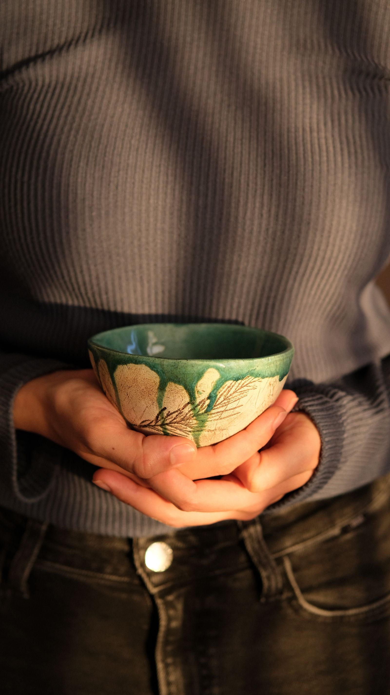

The hands behind the seams
Hina Mori came to kintsugi from the gold side. She grew up in Kanazawa, the city that beats nearly all of Japan's gold leaf, and spent her school holidays watching foil being hammered thinner than breath in a neighbour's workshop. The leaf was beautiful; what she wanted to know was where it went.
At nineteen she apprenticed at a urushi workshop in Kyoto. The first year was mostly grinding charcoal, washing brushes and learning that lacquer rashes the skin of everyone who works with it until, one day, it stops. Years two and three were polishing. Joining broken ware came later, and slowly: a master does not hand a student a three-hundred-year-old tea bowl, and Hina's first repairs were the workshop's own lunch dishes.
Six years in, she opened Kintsugi Glow in a rented room in Nishijin, Kyoto's old weavers' district — one bench, one muro cabinet, a shelf of other people's broken things. She still works alone. Every stage of every repair on this site passed through her hands, and the queue is capped at six pieces so that no curing schedule is ever hurried to make room.
Her rule for the bench is simple to state and slow to practise: the seam records the break the way a scar records an injury, as part of the object's biography, worn openly. The gold is there to make the record legible — at a glance, across a room, to whoever owns the piece next.
The studio uses natural urushi only. No epoxy, no resin kits, no metallic paint standing in for gold. The powder is 24-karat, ground from Kanazawa leaf; silver and platinum are worked the same way for pieces where gold would argue with the glaze.

- TrainingUrushi workshop apprenticeship, Kyoto — 6 years
- StudioNishijin, Kyoto · visits by appointment
- MaterialsNatural urushi; 24k gold, silver, platinum
- On the benchNever more than 6 pieces at once
- Turnaround6–10 weeks, set by curing
- Return shippingInsured, worldwide, paulownia box
Living with a repaired piece
Every returned commission travels with these notes. A kintsugi seam is strong — the lacquer bond can outlast the clay around it — but it asks for a little consideration in daily life.
- Hand-wash, lukewarm. Warm water, a soft cloth, a drop of mild detergent if needed. The dishwasher's heat and abrasives dull the gold and worry at the seams.
- Keep it out of the microwave and the oven. The seam carries real metal powder, and urushi softens under sustained heat. A repaired piece is tableware, not cookware.
- Do not soak it. A brief wash is fine. A long bath gives water time to work at the joins from the inside.
- Expect the gold to mellow. Keshi-fun lines soften in tone across the first year of use. That is the finish settling into the piece, not damage — most owners end up preferring it.
- Give it gentle duty. Fully cured urushi is food-safe, and a repaired bowl can hold tea daily. For hard daily service — the family ladle, the dog's bowl — the studio suggests the piece retire to lighter work: fruit, dry goods, display.
- If it breaks again, keep everything. Every shard, however small, and do not attempt a home repair first. A second kintsugi is usually possible, and old seams can be reworked — glue from a previous attempt is the one thing that makes the job harder.